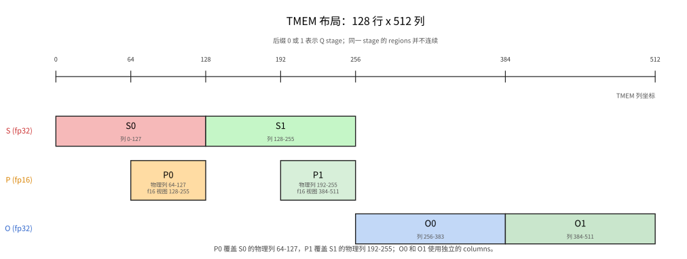
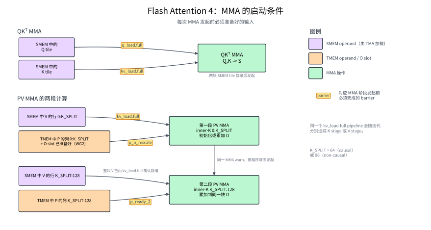
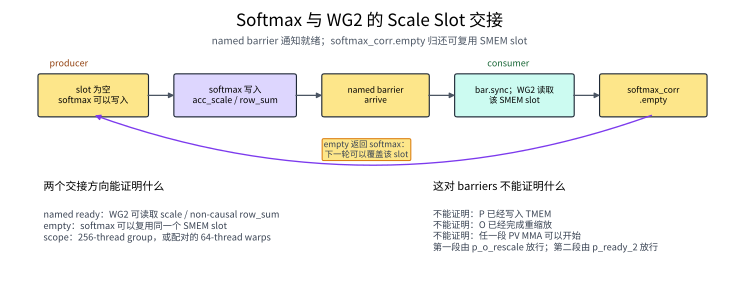
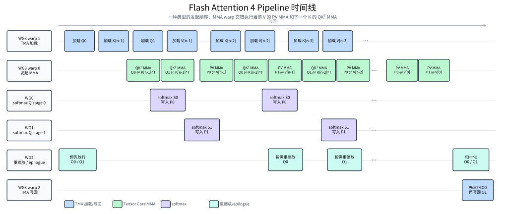

Flash Attention 4#
概览
FlashAttention 按 block 流式处理 K、V，并通过 online softmax 为每个 query row 维护指数参考值、未归一化权重之和与 output accumulator，从而不必将完整的 score matrix 写入 GMEM。
对每个 K/V block，QKᵀ MMA 生成
S，softmax 将S转换为P，PV MMA 再用P和V更新O；这三个 tiles 分区或分时复用同一块 TMEM allocation。FA4 使用 warp specialization 分开执行 TMA load、QKᵀ/PV MMA、softmax/correction 和结果写回，并通过 barriers 控制各阶段的数据交接与 buffer 复用；causal mask 和 GQA 则分别改变有效 score 范围与 Q rows 的解释方式。
Attention 是 Transformer 的核心计算之一，也是长序列场景中主要的性能和内存瓶颈之一。本章讨论的 Flash Attention 4（FA4）是针对 Blackwell GPU 优化的 attention forward kernel。给定 query Q、key K 和 value V，它计算：
其中，QKᵀ 给出 query 与 key 之间的 attention scores，\(d\) 是每个 attention head 的维度。除以 \(\sqrt{d}\) 可以控制 dot product 的数值范围；softmax 将每一行 scores 转换成 attention weights，最后与 V 相乘得到输出 O。直接实现会生成并保存完整的 score matrix，sequence length 增大后，这块中间结果会带来大量 memory traffic。
FlashAttention 的核心做法是将计算分块，只在片上保留当前 tiles 和逐行 softmax 状态，从而避免保存完整的 score matrix，计算结果仍与标准 attention 相同。各版本的主要区别在于如何把这套算法映射到当代 GPU。FlashAttention-2 改进了 thread blocks 和 warps 之间的任务划分。FlashAttention-3 在 Hopper 上使用 TMA、WGMMA 和 warp specialization，将数据搬运、两次 MMA 与 softmax 交错执行。FA4 则面向 Blackwell，围绕 tcgen05 和 TMEM 重新组织这条 pipeline。
前面的 GEMM kernel 已经介绍了这些 Blackwell 硬件路径：TMA 搬运 tiles，tcgen05 执行 MMA，accumulator 保存在 TMEM 中。FA4 将它们连接成一条新的计算链：QKᵀ MMA 先计算 score tile S = QK^T，CUDA cores 再将 S 转换为尚未归一化的权重 tile P，PV MMA 最后用 P 和 V 更新 output accumulator O。本章沿用 FA4 论文的写法，将这两次操作分别称为 QKᵀ MMA 和 PV MMA。当 softmax 使用的指数参考值发生变化时，TMEM 中已有的 O 还需要先转换到新的尺度。
本章沿着这条计算路径，依次说明 S、P 和 O 如何使用 TMEM，各个 warpgroups 如何分工，以及 barriers 如何在 TMA、Tensor Core、softmax 和结果写回之间交接数据。
算法结构#
上面的矩阵公式描述了完整的 attention 计算。对于 sequence length 为 \(L\) 的 self-attention，每个 head 的 score matrix S 的 shape 为 \(L\times L\)，使用 fp32 存储需要 \(4L^2\) bytes。完整的 S 无法长期保存在片上；如果将它写入 GMEM，再读回来计算 softmax 和后续矩阵乘法，就会产生随序列长度平方增长的中间数据流量。FlashAttention 因此以 query block 为单位计算，并逐块读取 K 和 V，从而避免在 GMEM 中保存完整的 S。
在长度为 \(L\) 的 self-attention 中，单个 head 的 Q、K 和 V 的 shape 都是 \(L\times d\)。用 \(i\) 表示 query 的序列位置，用 \(j\) 表示 key/value 的序列位置；矩阵中的对应行分别记为：
\(q_i\) 和 \(k_j\) 的点积得到位置 \((i,j)\) 上的标量 score：
固定第 \(i\) 个 query vector \(q_i\) 后，让它分别与所有 key vectors \(k_j\) 做点积，就得到这一行的 scores \(s_{ij}\)。这些 scores 组成 score matrix \(S=QK^\top\) 的第 \(i\) 行。基础 online softmax 先取这一行的最大值，作为计算指数时的参考值：
计算指数前统一减去 \(m_i\)，可以让这一行最大的指数输入变成 0，避免指数值过大。这项平移会同时作用于 softmax 的分子和分母，因此不会改变最终的归一化结果。每个位置的未归一化 attention weight 为：
将这一行的所有 \(p_{ij}\) 相加，得到未归一化权重之和 \(\ell_i\)。再用同一组 \(p_{ij}\) 对 value vectors 加权求和，得到尚未除以 \(\ell_i\) 的 output vector \(o_i\)：
最终输出为：
FlashAttention 按 block 处理 K/V。一个 block 的 scores 使用完后就可以丢弃，后续计算只需要保留当前的 \(m_i\)、\(\ell_i\) 和 \(o_i\)。其中，\(\ell_i\) 和 \(o_i\) 都是使用当时的参考值 \(m_i\) 计算并累积的。因此，后续 block 一旦改用更大的参考值，旧状态就必须先换算到新尺度，才能与当前 block 的贡献相加。
基础 online softmax 每次发现更大的逐行最大值都会完成这次换算。FA4 则先比较新旧参考值的差距：差距较小时继续使用旧值，从而避免立即重缩放已经累积的 output。要理解这项优化，先把参考值变化时的尺度转换写清楚。
代码使用 base-2 exponential，因此先定义：
于是自然指数可以改写为：
代码将 \(\alpha\) 记为 scale_log2。设旧状态使用参考值 \(m_{\mathrm{old}}\)，当前 block 的逐行最大值为 \(m_{\mathrm{block}}\)。用下标 \(c\) 表示 candidate，本轮可选的新参考值为：
再定义二者在 base-2 exponent 中的有符号差距 \(\delta\)，它对应代码变量 delta：
\(\delta\) 是旧参考值减去候选参考值后的有符号结果；\(-\delta\) 才表示候选参考值高出了多少个 base-2 exponent units。由于 \(m_c\ge m_{\mathrm{old}}\)，\(\delta\) 不会大于 0。
在 FA4 论文中，阈值通常取 \(\tau=\log_2(256)=8\)。当 \(-\delta=8\) 时，继续使用旧参考值会让当前 block 的最大未归一化权重达到 \(2^8=256\)；若切换到候选参考值，旧状态则要乘 \(2^\delta=1/256\)。因此，阈值 8 表示允许新旧尺度相差最多 256 倍，超过后才执行重缩放：delta >= -8 时保留旧参考值，delta < -8 时切换参考值。这种通过阈值延迟重缩放的做法，是 FA4 为减少 correction 的数据搬运和乘法开销而引入的执行优化；取值 8 则在减少重缩放次数和限制指数增长之间作了折中。
如果本轮改用候选参考值 \(m_c\)，此前相对于旧参考值计算的每个指数都要乘同一个系数：
将这个尺度转换系数记为 \(a_{\mathrm{scale}}\)，则：
切换到候选参考值 \(m_c\) 后，之前累积的归一化分母 \(\ell_i\) 和未归一化加权和 \(o_i\) 仍处于旧尺度。Kernel 先将两者同时乘以 \(a_{\mathrm{scale}}=2^\delta\)，转换到新尺度，再与当前 block 的结果相加。下面映射到伪代码时，\(\ell_i\) 和 \(o_i\) 分别记为 row_sum 和 O，转换系数则由 acc_scale = exp2(delta) 计算。
对应到下面的伪代码，需要跨 K/V blocks 保留的三项状态分别是：
row_max：计算指数时从这一行所有 scores 中共同减去的参考值，也就是 \(m_i\)。基础算法使用当前最大 score；FA4 在阈值允许时可以继续使用旧值。row_sum：已经处理过的所有 key positions 的 \(p_{ij}\) 之和，也就是 \(\ell_i\)。O：使用同一组 \(p_{ij}\) 得到的加权和 \(o_i\)；所有 blocks 处理完成后再除以row_sum。
现在可以看懂伪代码中的三种情况：
第一个 K/V block 还没有旧状态，直接采用
candidate_max，并令acc_scale = 1。当
delta >= -8时，kernel 保留旧参考值，当前 block 也继续相对于旧值计算，因此不需要转换旧状态，acc_scale = 1。当
delta < -8时，差距超过阈值。Kernel 改用candidate_max，并令acc_scale = exp2(delta)，把旧的row_sum和O转换到新尺度。
下面先忽略 warpgroup 分工和 pipeline overlap，写出一个 query block 的核心算法循环。真实 kernel 执行的仍是这些步骤，只是会让不同角色交错推进：
scale_log2 = log2(e) / sqrt(d)
rescale_threshold = 8
row_max = -inf
row_sum = 0
O = 0
first_block = true
for each (K_block, V_block):
S = Q_block @ K_block.T
if causal:
S[masked positions] = -inf
candidate_max = max(row_max, rowmax(S))
if first_block:
new_ref = candidate_max
acc_scale = 1
else:
delta = (row_max - candidate_max) * scale_log2 # delta <= 0
if delta >= -rescale_threshold: # 差距未超过阈值
new_ref = row_max
acc_scale = 1
else: # 差距超过阈值
new_ref = candidate_max
acc_scale = exp2(delta)
row_max_safe = 0 if new_ref == -inf else new_ref
P = exp2((S - row_max_safe) * scale_log2)
row_sum = row_sum * acc_scale + rowsum(P)
O = O * acc_scale[:, None] + P @ V_block
row_max = new_ref
first_block = false
for each row:
O[row, :] = O[row, :] / row_sum[row] if row_sum[row] != 0 else 0
store O
new_ref 是本轮最终采用的指数参考值。保留旧参考值时，acc_scale=1，原有状态不需要改变；采用候选参考值时，kernel 先用 acc_scale 转换旧的 row_sum 和 O。当前 block 的 P 随后统一按照 new_ref 计算。所有 K/V blocks 处理完成后，kernel 才计算最终的 O / row_sum。“重缩放与结果写回”一节会说明 WG2 如何执行或跳过 O 的尺度转换。
如果某一行截至当前 block 仍没有出现任何有效 score，该行的旧参考值和当前 block maximum 都是 -inf，因此 new_ref 也为 -inf。直接计算 S - new_ref 会出现 -inf - (-inf)；row_max_safe 在这种情况下改用 0，使被 mask 的 scores 的指数为 0，P、row_sum 和 O 也保持为 0。如果该行在更早的 blocks 中已经出现过有效 score，那么后续一个全被 mask 的 block 只会产生全 0 的新贡献，不会清空之前累积的 row_sum 和 O。
实际计算 exp2 时，FA4 论文提出让一部分元素使用 FP32 FMA 计算三次多项式近似，其余元素仍使用硬件 exp2，从而让 FMA 与 exponential units 分担这项工作。当前 TIRx 实现采用同样的混合方式：ex2_emulation_2 处理经过调优的一部分元素，其余元素调用 T.ptx.exp2。这只改变指数的实现路径，不改变上面的 online-softmax 更新公式。
将这套算法映射到 kernel 后，每个 K/V block 会产生或更新三类 tiles；它们的存储位置决定了后面的 layout 和 barrier：
S是 score tile，由 QKᵀ MMA 写入 TMEM。P是尚未归一化的权重 tile。Softmax 将S从 TMEM 读入 registers，计算P = exp2((S - row_max_safe) * scale_log2)，再将P写回 TMEM。O是 output accumulator tile。PV MMA 从 TMEM 读取P、从 SMEM 读取V，并将结果累加到 TMEM 中的O。
指数参考值改变时，旧的 O 会从 TMEM 读入 registers，完成 rescale 后再写回 TMEM，随后 PV MMA 才能继续累加。
Tile Primitive 数据流#
明确 S、P 和 O 三类 tiles 的含义后，就可以把一个 K/V block 的处理过程展开成具体的数据路径：
Q, K: GMEM --TMA load--> SMEM --QKᵀ MMA--> S in TMEM
S: TMEM --tcgen05.ld--> registers --softmax--> P in registers
P: registers --TMEM store--> P in TMEM
V: GMEM --TMA load--> V in SMEM
P, V: P in TMEM + V in SMEM --PV MMA--> O in TMEM
必要时：O in TMEM --tcgen05.ld--> registers --rescale/TMEM store--> O in TMEM
最终： O in TMEM --tcgen05.ld--> registers --normalize/cast--> O in SMEM --TMA store--> O in GMEM
QKᵀ MMA 只读取 Q 和 K，生成 S。Softmax 随后将 S 从 TMEM 读到 registers，计算 P，再把 P 写回 TMEM；PV MMA 读取这块 P 和 SMEM 中的 V，更新 TMEM 中的 O。处理后续 K/V blocks 时，O 可能先经过一次重缩放；所有 blocks 完成后，epilogue 才执行最终归一化和写回。
下表将这条路径对应到具体的 TIRx primitives 和硬件指令：
阶段 |
Tile 移动或计算 |
TIRx primitive |
硬件路径 |
|---|---|---|---|
加载 Q/K/V |
GMEM tiles → SMEM tiles |
|
TMA load |
QKᵀ MMA |
SMEM 中的 Q、K → TMEM 中的 score tile |
|
|
Softmax 读出 |
TMEM 中的 |
|
|
Softmax 写回 |
registers 中尚未归一化的权重 tile |
|
TMEM store，随后执行 |
PV MMA |
TMEM 中的 |
|
使用 TMEM operand 的 |
重缩放 |
TMEM 中的 |
TMEM readback、register multiply、TMEM store |
|
Epilogue |
TMEM 中的最终 |
TMEM readback、 |
|
与 GEMM 相比，FA4 在两次 MMA 之间加入了 softmax：S 需要从 TMEM 读出，P 又要写回 TMEM。指数参考值改变时，O 还会额外经过一次 TMEM → registers → TMEM 的重缩放。后文新增的 layouts 和 barriers，主要用来保证这些读写按照正确顺序发生。
Warp 角色与 Scope#
确定数据路径之后，下一步是将各个阶段分配给具体的 threads。一个 CTA 包含 4 个 warpgroups，每个 warpgroup 又包含 4 个 warps、共 128 个 threads，因此整个 CTA 有 512 个 threads。下文将 warpgroup 0 至 3 简写为 WG0 至 WG3。
Kernel 同时让两块 Q tiles 处于处理流程中。每块 Q tile 都分配一个可循环复用的 slot，其中包括 SMEM 中的 Q buffer、TMEM 中对应的 S、P、O 区域，以及保护这些数据的 barriers。代码将这样的 slot 称为 Q stage，并将两个 slots 分别编号为 stage 0 和 stage 1。WG0 负责 stage 0 的 softmax，WG1 负责 stage 1 的 softmax；WG3 为两个 stages 发起 TMA 和 MMA，WG2 处理两者的重缩放与 epilogue。
四个 warpgroups 的具体分工如下：
Owner |
角色 |
工作内容 |
|---|---|---|
WG3, warp 1 |
TMA load |
将 Q、K、V tiles 从 GMEM 加载到 SMEM |
WG3, warp 0 |
MMA |
发起 QKᵀ MMA 和 PV MMA |
WG3, warp 2 |
TMA store |
将最终的 O tiles 从 SMEM 写回 GMEM |
WG0 |
Q stage 0 的 softmax |
从 TMEM 读取 S，计算 P，再将 P 写回 TMEM |
WG1 |
Q stage 1 的 softmax |
为第二个 Q pipeline stage 执行相同工作 |
WG2 |
重缩放和 epilogue |
对 TMEM 中的 O 执行 rescale、normalization 和 output staging |
代码使用两个 thread coordinates 选择当前 thread 的角色：
wg_id = T.warpgroup_id([4])
warp_id = T.warp_id_in_wg([4])
wg_id 和 warp_id 的取值都为 0–3：前者选择当前 thread 所属的 warpgroup，后者选择该 warpgroup 内的 warp。Kernel 根据这两个值进入对应的 role branch。
WG3 中，warp 1、warp 0 和 warp 2 分别提交 TMA load、MMA 和 TMA store。每个 warp 只由一个 elected lane 发出指令，实际操作由 TMA engine 或 Tensor Core 完成。WG0、WG1 以完整 warpgroup 执行 softmax，WG2 负责重缩放与 epilogue；FA4 代码将 O 的重缩放称为 correction。
Registers 如何在角色之间分配#
Warp specialization 不只分配工作，也让 kernel 可以把 register 容量集中给真正需要它的角色。WG3 大多只负责发出 TMA 和 MMA 指令，不需要长期保存大块中间结果；WG0 和 WG1 则要让每个 thread 同时保存一整行 128 个 fp32 scores，以及 softmax 计算使用的临时值。如果 CTA 中的 512 个 threads 都按 softmax 的最大需求保留 registers，就会超出 register 容量。
代码因此通过 setmaxnreg 动态调整每个角色中每个 thread 的 register 上限：
if wg_id == 3:
Tx.ptx.setmaxnreg(False, 48) # WG3 释放多余 registers
elif wg_id < 2:
Tx.ptx.setmaxnreg(True, 200) # WG0/WG1 为 softmax 增加 registers
with WarpgroupRole(wg_id, 2, regs=64): # WG2 执行 correction / epilogue
...
当前配置中，WG0 和 WG1 每个 thread 最多使用 200 个 32-bit registers，WG2 使用 64 个，WG3 使用 48 个。四个 128-thread warpgroups 的总预算为：
128 × (200 + 200 + 64 + 48) = 65,536 个 32-bit registers
这种重分配让 softmax threads 能把完整 score row 留在 registers 中，同时不会为只负责发指令的 WG3 预留同样大的 register 配额。
论文与当前 TIRx 实现的差异#
本章解释的是当前 flash_attention4.py 的默认执行路径。它沿用了 FA4 论文的整体 pipeline，但有两处实现选择并不相同。
第一，论文让 WG0 和 WG1 的 exponential-heavy softmax 区域错开执行，避免两个 softmax warpgroups 同时争用 exponential units。当前代码保留了 bar_s0_s1_sequence 及其同步分支，但默认设置 USE_S0_S1_BARRIER=False，因此默认路径不会启用这项顺序约束。
第二，论文利用空余 TMEM 传递 correction statistics；当前 TIRx 实现则把逐行的 acc_scale 和最终 row_sum 写入 SMEM buffer sScale，再通过 softmax_corr.full/empty 在 softmax warpgroups 与 WG2 之间交接。后文介绍的 mailbox 指的就是这个 TIRx 实现，而不是论文中的 TMEM 传递方式。
阅读代码前的约定#
本章使用的片段来自 flash_attention4.py，因此会引用在片段之外定义的 shapes、stage indices 和 phase variables。下面列出后文反复出现、但不容易只看名字判断含义的符号：
名称 |
含义 |
|---|---|
|
当前 Q pipeline stage，取值为 0 或 1；在 WG0/WG1 的 softmax 分支中， |
|
Score tile 和 TMEM region 的基本宽度，当前为 128 columns |
|
PV MMA 每个 inner-K step 处理 16 个位置； |
|
当前 PV MMA 是初始化 |
|
与 |
|
当前 row 的旧 |
|
延迟更新指数参考值的阈值，当前为 8.0 |
|
base-2 指数使用的 softmax scale，即 |
|
Softmax 交给 WG2、用于调整旧 |
Barrier 的分工与完成条件#
FA4 的 pipeline 同时维护多种彼此独立的交接状态。Q、K/V 的 SMEM stages 需要在 TMA 和 MMA 之间交接；S、P、O 的 TMEM slots 需要在 Tensor Core、softmax 和 correction 之间交接；softmax 与 WG2 还要复用 mailbox，epilogue 与 TMA store 则要复用 O_smem。这些事件由不同角色在不同时间完成，也保护不同的存储位置，因此需要分别追踪。
对于循环复用的存储，交接通常包含两个方向：full 或 ready 表示 producer 已经写好数据，consumer 可以读取；empty 表示 consumer 已经用完，producer 可以覆盖这块存储。下面的 barriers 分别记录这些数据就绪和资源归还事件。
Barrier 的初始化 count 也不总是 thread 数。普通 MBarrier 统计显式 arrival 次数；如果一个 128-thread warpgroup 中每个 thread 都执行一次 arrive，count 才是 128。TMABar 除了一次 producer arrival，还要等待登记的传输字节数归零；TCGen05Bar 则等待一次由 tcgen05.commit 发出的 Tensor Core 完成通知。
当前实现中，q_load.full 和 kv_load.full 使用 TMABar；q_load.empty、kv_load.empty、s_ready 和 o_ready 使用 TCGen05Bar；其余 barriers 使用普通 MBarrier。下表列出每个 barrier slot 在一个 phase 内的完成条件。Q pipeline 有 2 个 slots，K/V pipeline 有 3 个 slots，其余表中的 staged barriers 各有 2 个 slots。
对于 TCGen05Bar，表格描述的是 barrier 在算法中的逻辑职责，也就是它保护哪份数据以及完成后允许哪个角色继续执行。实际的 tcgen05.commit 会让 barrier 跟踪同一个 issuing thread 在 commit 之前发出的相关异步 tcgen05 操作，并不保证只包含表中命名的那一条 MMA。因此，表中的 QKᵀ/PV MMA 应理解为这次交接所关心的最后一个结果或最后一次使用；硬件上的完成依赖可能更加保守。
Barrier |
参与通知的 threads |
每个 phase 的完成条件 |
完成后可以安全执行的操作 |
|---|---|---|---|
|
1 个 elected TMA-load thread |
该 thread 报告 1 次 arrival；TMA 再完成 |
QKᵀ MMA 可以读取 Q SMEM tile |
|
1 个 elected MMA thread |
该 thread 提交完成通知；Tensor Core 完成所有仍在读取该 Q stage 的 QKᵀ MMA 后更新 barrier |
TMA 可以用下一个 query tile 覆盖该 Q stage |
|
1 个 elected TMA-load thread |
该 thread 报告 1 次 arrival；TMA 再完成 |
QKᵀ MMA 或 PV MMA 可以读取当前 K/V SMEM tile |
|
1 个 elected MMA thread |
该 thread 提交完成通知；Tensor Core 完成读取该 stage 的两次 MMA 后更新 barrier |
TMA 可以复用该 K/V stage |
|
1 个 elected MMA thread |
Tensor Core 完成 QKᵀ MMA 后报告 1 次通知 |
Softmax 可以读取 S TMEM tile |
|
128 个 softmax threads + 128 个 WG2 threads |
两组共报告 256 次 arrivals |
第一段 PV MMA 可以读取 |
|
Softmax warpgroup 的 128 个 threads |
共报告 128 次 arrivals |
第二段 PV MMA 可以读取 |
|
1 个 elected MMA thread |
Tensor Core 完成最后一段 PV MMA 后报告 1 次通知 |
Epilogue 可以读取最终 O accumulator |
|
Softmax warpgroup 的 128 个 threads |
共报告 128 次 arrivals |
WG2 可以读取 mailbox 中的 |
|
WG2 的 128 个 threads |
共报告 128 次 arrivals |
Softmax 可以继续推进并复用 mailbox |
|
WG2 的 128 个 threads |
共报告 128 次 arrivals |
TMA-store warp 可以读取已经写好的 |
|
TMA-store warp 的 32 个 threads |
等待 TMA store 完成后，共报告 32 次 arrivals |
Epilogue 可以复用该 |
表中的 count 都针对单个 slot 的当前 phase。多个 slots 只是在不同 pipeline stages 上各自保存一份 barrier 状态，并不会把 expected arrival count 相乘。后文遇到每个 barrier 时，会结合对应的 wait 和 arrive 位置展开它的具体交接过程。
QKᵀ MMA 与 PV MMA#
固定一个 Q stage 后，kernel 会依次用它处理流式到达的 K/V blocks。每处理一个 block，都要完成下面三步：
Q, K -> QKᵀ MMA -> S
S -> softmax -> P
P, V -> PV MMA -> O
QKᵀ MMA 先生成当前 block 的 attention scores S，softmax 再将 S 转换为尚未归一化的权重 P，PV MMA 最后计算 P @ V。第一个 K/V block 的结果用于初始化 O，后续 blocks 的结果则继续累加到同一块 O 中。所有 blocks 处理完成后，epilogue 才用 row_sum 对 O 做最终归一化。
下面依次分析这三个步骤。每个 tile operation 都从四个方面说明：哪些 threads 执行它，operands 和结果采用什么 layout，最终 dispatch 到哪条硬件路径，以及哪个 barrier 将结果交给下一角色。
代码使用 S_region、P_region 和 O_region 表示同一块 TMEM allocation 中保存三类 tiles 的区域。q_stage 和 i_q 都表示当前使用的 Q stage，取值为 0 或 1；用同一个 stage index 访问这三个 regions，就能选中同一块 Q tile 对应的 S、P 和 O。这里先把它们理解为命名后的 TMEM 区域，具体的 column 划分将在“TMEM 布局与复用”一节说明。
QKᵀ MMA#
对于当前 Q stage 和当前 K block，QKᵀ MMA 计算：
Q_block 和 K_block 的 shape 都是 128×HEAD_DIM。K_block 转置后，每条 Q row 都会与 128 条 K rows 分别做点积，因此得到一个 128×128 score tile：行对应 queries，列对应当前 K block 中的 keys。结果写入当前 Q stage 的 S_region[q_stage]；代码中的 MMA_N=128 就是这 128 个 score columns。
Tx.warp.gemm_async(
S_region[q_stage],
Q_smem[q_stage, 0:BLK_M, 0:HEAD_DIM],
K_smem[kv_stage, 0:BLK_N, 0:HEAD_DIM],
dispatch="tcgen05",
cta_group=CTA_GROUP,
)
if T.ptx.elect_sync():
s_ready.arrive(q_stage)
Tile primitive：QKᵀ MMA
Scope：WG3 warp 0 执行这个 warp-scoped tile operation；其中一个 elected lane 提交完成通知。
Layout：SMEM 中的 Q、K → TMEM 中的
S（S_region[q_stage]）。Dispatch：
tcgen05。交接：
s_ready（→ softmax）。
s_ready 是追踪 Tensor Core 完成状态的 TCGen05Bar。这里的 s_ready.arrive(q_stage) 会发出 tcgen05.commit，将此前启动的 QKᵀ MMA 与该 stage 的 barrier 关联起来。只有一个 elected lane 执行这次 commit；Tensor Core 写完 S 后，硬件才会向 barrier 报告完成。对应的 softmax warpgroup 等待 s_ready 通过后，才能读取 S_region[q_stage]。
两次 MMA 之间的 Softmax#
Softmax 位于两次 MMA 之间，负责将 score tile S 转换为尚未归一化的权重 tile P：
Tile primitive：Softmax
Scope：WG0（Q stage 0）或 WG1（Q stage 1），完整 warpgroup。
Layout：TMEM 中的
S→ registers → fp16 TMEM 中的P（P_region[wg_id]）。Dispatch：通过
tcgen05.ld读取S，在 registers 中执行逐行 softmax，再通过tcgen05.st写回P。交接：先等待
s_ready；前 96 columns 写完后向p_o_rescale报告完成，最后 32 columns 写完后再通知p_ready_2。
每个 score tile 有 128 行，一个 softmax warpgroup 也有 128 个 threads，因此 kernel 让 thread r 负责逻辑 row r。代码中的 wg_local_layout 表达的就是这项映射：每个 thread 最终处理自己一行的 128 个 scores。
每个 thread 会为这一整行保留一个包含 128 个 fp32 values 的 register buffer s_chunk_buf；前面为 WG0/WG1 设置的 200-register 上限主要就是为这个 buffer 和 softmax 临时值提供空间。WG0/WG1 等待 s_ready 后，并不是用一条指令读出整行，而是通过四次 32-column tcgen05.ld 填满这个 buffer：
for chunk_idx in Tx.unroll(BLK_N // SOFTMAX_LD_CHUNK):
Tx.copy_async(
s_chunk[
:, chunk_idx * SOFTMAX_LD_CHUNK : (chunk_idx + 1) * SOFTMAX_LD_CHUNK
],
S_region[
wg_id,
chunk_idx * SOFTMAX_LD_CHUNK : (chunk_idx + 1) * SOFTMAX_LD_CHUNK,
],
)
这里 SOFTMAX_LD_CHUNK=32。分块的是 TMEM load，而不是 softmax 算法：当前实现将一整行拆成四个较小的 register fragments，每次填入 32 个 values，从而控制单次 tile operation 的 register tuple 大小。四次 load 结束后，完整的 128 个 scores 仍同时保存在每个 thread 的 registers 中。这是当前 kernel 选择的读取粒度，并不表示 softmax 被分成四次独立计算。随后，每个 thread 对自己负责的整行完成下面的计算：
求当前 128 个 scores 的最大值，并结合此前保存的
row_max，确定本轮的指数参考值和acc_scale。计算这一行的 \(p_{ij}\)，并将 fp32 结果转换为 fp16，组成 tile
P。对这一行的 \(p_{ij}\) 求和，更新
row_sum。
下面的代码省略了 profiler 和可选的 WG0/WG1 顺序 barrier，保留了这三步的主要计算。先求新的参考值，并根据阈值决定是否需要重缩放旧的 O：
row_max_old = row_max[0]
with Tx.thread():
if is_first:
Tx.max(tile_max, s_chunk_buf)
else:
tile_max[0] = row_max_old
Tx.max(tile_max, s_chunk_buf, accum=True)
row_max_new = tile_max[0]
row_max_safe = Tx.if_then_else(tile_max[0] == -float("inf"), 0.0, tile_max[0])
if is_first:
acc_scale = Tx.float32(1.0)
else:
acc_scale_ = (row_max_old - row_max_safe) * scale_log2
if acc_scale_ >= -rescale_threshold:
row_max_new = row_max_old
row_max_safe = row_max_old
acc_scale = Tx.float32(1.0)
else:
acc_scale = Tx.ptx.exp2(acc_scale_)
row_max[0] = row_max_new
然后将 scores 转成 base-2 exponent 的输入，计算 fp32 权重，并转换为后续 PV MMA 使用的 fp16 P。实现会在硬件 exp2 和 ex2_emulation_2 之间选择：
Tx.fma(s_chunk, s_chunk, scale_log2, -row_max_safe * scale_log2)
for frag_idx in Tx.unroll(4):
with Tx.thread():
s_chunk_local = s_chunk_buf.local(BLK_N)
for i in Tx.unroll(BLK_N // 4 // 2):
idx = Tx.meta_var(frag_idx * BLK_N // 4 + 2 * i)
if i * 2 % 16 < 16 - 4 or frag_idx >= 4 - 1 or apply_mask:
s_chunk_local[idx] = Tx.ptx.exp2(s_chunk_local[idx])
s_chunk_local[idx + 1] = Tx.ptx.exp2(s_chunk_local[idx + 1])
else:
ex2_emulation_2(
s_chunk_local,
idx,
s_chunk_local[idx],
s_chunk_local[idx + 1],
)
Tx.cast(
p_chunk[:, frag_idx * BLK_N // 4 : (frag_idx + 1) * BLK_N // 4],
s_chunk[:, frag_idx * BLK_N // 4 : (frag_idx + 1) * BLK_N // 4],
)
Softmax 随后将 P 分四个 32-column chunks 写回 TMEM。代码先写前三个 chunks，等待这些 TMEM stores 完成，再报告前 96 columns 已经准备好：
for i in Tx.unroll(3):
Tx.copy_async(
P_region[wg_id, i * BLK_N // 4 : (i + 1) * BLK_N // 4],
p_chunk[:, i * BLK_N // 4 : (i + 1) * BLK_N // 4],
)
T.ptx.tcgen05.wait.st()
p_o_rescale.arrive(wg_id)
Tx.copy_async(P_region[wg_id, 3 * BLK_N // 4 : BLK_N],
p_chunk[:, 3 * BLK_N // 4 : BLK_N])
T.ptx.tcgen05.wait.st()
p_ready_2.arrive(wg_id)
s_chunk_buf 中仍保留着转换前的 fp32 P。WG2 读完 acc_scale 并归还 mailbox 后，softmax warpgroup 再用这些 values 更新 denominator：
softmax_corr.empty.wait(wg_id, phase_q)
with Tx.thread():
if is_first:
Tx.sum(row_sum, s_chunk_buf)
else:
row_sum[0] = row_sum[0] * acc_scale
Tx.sum(row_sum, s_chunk_buf, accum=True)
第一段 PV MMA 需要同时读取 P[:, 0:96] 和更新 O，所以必须等待两件事：softmax 已写完这部分 P，WG2 也已确认 O 可以初始化或继续累加。p_o_rescale 汇合这两个完成信号。最后 32 columns 使用单独的 p_ready_2，这样第一段 MMA 不必等待最后一次 TMEM store。
为什么刚在 registers 中算出 P，又要把它写回 TMEM？这里的 PV MMA 使用 tcgen05.mma，其 P operand 必须采用 MMA 能读取的 TMEM layout，不能直接使用分散在 softmax threads 私有 registers 中的值。P_region 是同一块物理 TMEM 的 fp16 view；写回这个区域后，P 才能作为下一次 MMA 的矩阵 operand。
PV MMA#
当前 block 的 P 和 V 都准备好后，PV MMA 使用它们更新 O：
第一个 K/V block：O = P_block @ V_block
后续 K/V blocks： O = O + P_block @ V_block
P 的 shape 为 128×128，V block 的 shape 为 128×d，因此 P@V 产生一个 128×d output tile。第一个 K/V block 还没有旧结果，should_accumulate=false，这次乘积直接初始化 O。后续 blocks 使用 should_accumulate=true；在发起 MMA 前，WG2 必须先完成旧 O 的必要重缩放，或确认本轮不需要重缩放。
PV MMA 的两个 operands 来自不同的 memory spaces：P 位于 TMEM，V 位于 SMEM，fp32 accumulator O 也位于 TMEM。Kernel 又将 128 个归约位置拆成 96 和 32 两段，代码如下：
# 第一段：P 的前 96 columns 与 V 对应的前 96 rows。
Tx.warp.gemm_async(
O_region[i_q],
P_region[i_q, 0:K_SPLIT],
V_smem[kv_stage, 0:K_SPLIT, 0:HEAD_DIM],
transB=True,
accum=should_accumulate,
dispatch="tcgen05",
cta_group=CTA_GROUP,
)
p_ready_2.wait(i_q, phase_tmem)
Tx.warp.gemm_async(
O_region[i_q],
P_region[i_q, K_SPLIT:BLK_N],
V_smem[kv_stage, K_SPLIT:BLK_N, 0:HEAD_DIM],
transB=True,
accum=True,
dispatch="tcgen05",
cta_group=CTA_GROUP,
)
Tile primitive：PV MMA
Scope：WG3 warp 0 执行这个 warp-scoped tile operation。
Layout：TMEM 中的
P+ SMEM 中的 V → TMEM 中的O（O_region[i_q]）。Dispatch：使用 TMEM operand 的
tcgen05。交接：第一段等待
kv_load.full和p_o_rescale，第二段再等待p_ready_2；最后一个 K/V block 完成后，通过o_ready交给 epilogue。
kv_load.full 确认 V 已经进入 SMEM。p_o_rescale 同时确认 P 的前 96 columns 已经写入 TMEM，并且 O 可以初始化或继续累加。第一段 MMA 发出后，kernel 再等待 p_ready_2，确认最后 32 columns 已经写完，然后以 accum=true 发出第二段 MMA。这里第二段始终累加，因为即使是第一个 K/V block，O 也已经包含第一段产生的 partial sum。
这里的 inner-K 是矩阵乘法 P(128×128) @ V(128×d) 的归约维，也就是当前 K/V block 内的 128 个位置。硬件每个 MMA_K=16 step 消费其中 16 个位置。Kernel 将前六个 steps 合并为第一段，因此 K_SPLIT=6*MMA_K=96；剩余的 32 个位置由第二段处理：
Softmax 将
P分成四个 32-column chunks 写入 TMEM。前三个 chunks 准备好后，PV MMA 立即处理
P的前 96 columns 和 V 中对应的 rows。最后 32 columns 通过
p_ready_2单独等待。第二段 MMA 处理最后一个 chunk，完成当前 tile。
这样拆分可以减少 Tensor Core 等待 P writeback 的时间。如果把 128 个归约位置作为一个整体交接，PV MMA 必须等四个 P chunks 全部写入 TMEM 后才能开始。现在，前三个 chunks 写完后，第一段 MMA 就可以启动，并与 softmax warpgroup 对最后 32 columns 的 TMEM store 及其完成通知并行推进。
TMEM 布局与复用#
FA4 为一个 CTA 申请 128 rows × 512 个物理 TMEM columns，每个 cell 为 32 bits。两个 Q stages 都需要保存一个 128-column fp32 score tile S 和一个 128-column fp32 output accumulator O，因此仅 S 和 O 就会占满整块 allocation：
2 stages × (128 columns for S + 128 columns for O) = 512 columns
源码首先为这块 allocation 建立两个 buffer。move_base_to(0) 将分配位置移回起点，因此 tmem_as_f16 与 tmem 从同一个物理 TMEM column 开始：
tmem_pool = T.TMEMPool(
pool, total_cols=N_COLS_TMEM, cta_group=CTA_GROUP, tmem_addr=tmem_addr
)
tmem = tmem_pool.alloc((128, N_COLS_TMEM), "float32")
tmem_pool.move_base_to(0)
tmem_as_f16 = tmem_pool.alloc((128, N_COLS_TMEM * 2), "float16")
tmem_pool.commit()
这两个 buffer 每行包含的总 bits 相同：
tmem: 512 × 32 bits = 16384 bits
tmem_as_f16: 1024 × 16 bits = 16384 bits
所以，tmem_as_f16 不是另一块存储，而是同一行 TMEM 的另一种索引方式。硬件仍将每行划分为 512 个 32-bit 格子；这里把格子的编号称为物理 column。通过 fp16 buffer 访问时，每个格子被看成两个 16-bit element slots：
物理 column p（32 bits）
┌────────────────┬────────────────┐
│ fp16 slot 2p │ fp16 slot 2p+1 │
└────────────────┴────────────────┘
因此，tmem[:, p] 以 fp32 读取整个格子；tmem_as_f16[:, 2p] 和 tmem_as_f16[:, 2p+1] 则分别访问其中两个 fp16 values。
建立这两个 buffer 后，源码再定义 S、P 和 O 的两个 pipeline stages：
S_region = T.TMEMStages(
tmem, col_start=0, width=MMA_N,
stages=SMEM_PIPE_DEPTH_Q, stride=MMA_N,
)
O_region = T.TMEMStages(
tmem, col_start=MMA_N * SMEM_PIPE_DEPTH_Q, width=MMA_N,
stages=SMEM_PIPE_DEPTH_Q, stride=MMA_N,
)
P_region = T.TMEMStages(
tmem_as_f16, col_start=MMA_N, width=BLK_N,
stages=SMEM_PIPE_DEPTH_Q, stride=MMA_N * 2,
)
这里 MMA_N=BLK_N=128，Q pipeline 有两个 stages。S_region 和 O_region 通过 fp32 buffer 索引，所以它们的下标就是物理 column 编号。P_region 通过 fp16 buffer 索引，需要把下标除以 2 才得到物理 column。
以 P0 为例。设 n 是它自己的逻辑列号，则：
P_region[0, n]
-> tmem_as_f16[:, 128 + n] # col_start = 128
-> 物理 column 64 + n // 2
P0[:, 0] 和 P0[:, 1] 因而落在物理 column 64 的两个 16-bit 半格中；P0[:, 2] 和 P0[:, 3] 落在物理 column 65。128 个 fp16 values 最终占用 64 个物理 columns，即 [64, 128)。
对于 stage 1，P_region 的 fp16 起点为 128 + 1 × 256 = 384，所以：
P_region[1, n]
-> tmem_as_f16[:, 384 + n]
-> 物理 column 192 + n // 2
因此 P1 占用物理 columns [192, 256)。下图和表格汇总了所有 regions 的最终位置：

Region |
每行保存的数据 |
实际占用的物理 columns |
|---|---|---|
|
128 个 fp32 scores |
|
|
128 个 fp16 weights |
|
|
128 个 fp32 scores |
|
|
128 个 fp16 weights |
|
|
128 个 fp32 accumulator values |
|
|
128 个 fp32 accumulator values |
|
P 没有第三块独立空间。这里的重叠是分时复用，并不是 S 和 P 同时保存在相同位置。以 stage 0 为例，QKᵀ MMA 最初在物理 columns [0, 128) 写入完整的 S0；softmax 将 S0 全部读入 registers 后，再把 128 个 fp16 P0 values 两两打包，写入 [64, 128)。这会覆盖原来位于该处的后 64 个 fp32 scores，而这些 scores 此时已经不再需要。
这种复用要求三个操作严格按顺序发生：softmax 必须先把完整的 S 读入 registers，之后才能用 P 覆盖 S 的后半部分；PV MMA 必须等对应的 P chunks 写完后才能读取；下一轮 QKᵀ MMA 又必须等当前 P 已被消费后，才能重新写入这块区域。
这些条件不是只靠普通的源代码顺序保证。QKᵀ MMA 的 tcgen05.commit 完成通知通过 s_ready 放行 softmax；softmax 等 TMEM-to-register loads 完成后才使用这些 scores。写回 P 时，tcgen05.wait::st 先确认异步 TMEM stores 完成，softmax 再向 p_o_rescale 或 p_ready_2 报告 arrival；PV MMA 等待对应 barrier 后才读取。最后，PV MMA 和下一轮 QKᵀ MMA 由 WG3 warp 0 中的同一个 issuing thread 按固定的 tcgen05 序列发出，lowering 需保留它们之间必要的 tcgen05 依赖。这些完成与顺序机制一起防止同一块 TMEM 被过早读取或覆盖。
Regions 定义完成后，计算代码只需用 stage index 访问 S_region[...]、P_region[...] 和 O_region[...]，不再直接计算原始 TMEM column 编号。
关键 Barrier 协议#
前面的总表已经列出了所有 barriers 的通知者、完成条件和放行操作。下面只展开两处最容易混淆的同步过程：QKᵀ MMA 和 PV MMA 在发起前分别等待哪些条件，以及 softmax 与 WG2 如何通过一对 full/empty barriers 复用 SMEM 中用于传递逐行状态的交换槽。
两次 MMA 分别等待什么#
下图列出了 QKᵀ MMA 和两段 PV MMA 各自的开始条件，也就是每段计算在发起前必须等到哪些 operands 和 accumulator 状态：

上半部分是 QKᵀ MMA。q_load.full 确认当前 Q stage 已经进入 SMEM，kv_load.full 确认当前 K stage 已经进入 SMEM；两个条件都满足后，QKᵀ MMA 才能生成 S。
下半部分把 PV MMA 拆成代码中实际发出的两段。第一段处理 inner-K 0:96：kv_load.full 确认整块 V 已经进入 SMEM，p_o_rescale 则同时等待 P[:, 0:96] 写入 TMEM，并确认 O slot 可以初始化或继续累加。第一个 K/V block 可以直接初始化 O；后续 blocks 则要先完成必要的重缩放，或者确认本轮可以跳过重缩放。
第一段发出后，同一个 MMA warp 等待 p_ready_2，再使用 P[:, 96:128] 和 V[96:128, :] 发出第二段，并以 accum=True 累加到同一块 O。第二段不需要再次等待 kv_load.full，因为整块 V 在第一段开始前已经确认就绪。p_ready_2 只放行第二段，不会推迟第一段的启动。
p_o_rescale 的 expected arrival count 为 256：softmax warpgroup 写完 P 的前 96 columns 后贡献 128 次 arrivals，WG2 让 O 准备好后再贡献 128 次。第一个 K/V block 尚无旧的 O，WG2 会预先报告自己这一半 arrivals；后续 blocks 则在重缩放完成或确认无需重缩放后报告。两组 arrivals 全部到达，barrier 才会放行第一段 PV MMA。p_ready_2 的 expected arrival count 为 128，由 softmax warpgroup 在最后 32 columns 写入 TMEM 后报告，用来单独放行第二段。
Softmax 如何向 WG2 传递逐行状态#
Softmax warpgroup 还要把每个 output row 的两个标量交给 WG2。K/V loop 期间传递 acc_scale[row]，告诉 WG2 应该把 TMEM 中该行的旧 O 缩放多少；所有 K/V blocks 处理完成后，再传递最终的 row_sum[row]，供 WG2 计算 O[row, :] / row_sum[row]。Kernel 在 SMEM buffer sScale 中为每个 Q stage 保留一个可复用的交换槽，下面简称 mailbox。Softmax 写入后通过 softmax_corr.full 通知 WG2；WG2 读完后通过 softmax_corr.empty 归还这个槽。下图先画出单个 mailbox slot 的 full/empty 协议：

从单个 slot 看，这组 producer-consumer 协议可以理解为：
Softmax 先等待
softmax_corr.empty，确认 scale/sum slot 可以复用。Softmax 将
acc_scale或最终row_sum写入该 slot。Softmax 向
softmax_corr.full报告 arrival。WG2 等待
softmax_corr.full，再读取该 slot。WG2 发出对应的 empty arrival。
Softmax warpgroup 在下一 phase 中继续使用 mailbox。
第一个 K/V block 没有旧的 O，因此不需要传递 acc_scale。不过，softmax 和 WG2 仍完成一次 full/empty 交接，让双方的 barrier phase 同时前进；否则下一轮可能等待不同的 phase。后续 iterations 使用同一 mailbox 传递 acc_scale，最后一次交接再传递 row_sum。
实际 kernel 将两个 Q stages 的 correction 交错执行。WG2 处理 stage i_q 后，会用 softmax_corr.empty.arrive(1 - i_q) 放行另一个 softmax stage，使 WG0 和 WG1 交替前进；epilogue 读取最终 row_sum 时，才归还同一个 i_q 对应的 slot。因此，上图只说明一个 mailbox slot 如何完成交接，代码中的 stage index 还受到两级 pipeline 的交错顺序影响。
还要区分 softmax_corr.empty 与 p_o_rescale。前者控制 softmax mailbox 和两级执行顺序；后者才向 PV MMA 证明 P 与 O 已经满足第一段计算的条件。
FA4 比 GEMM 多出的 barriers 大多围绕 softmax：QKᵀ MMA 与 PV MMA 之间增加了 register 计算、TMEM rewrite 和 output rescale，每一步都需要明确证明下一角色何时可以读取数据或复用存储空间。
Pipeline 时间线#
前一节的交接图说明了每个角色开始前需要等待什么，但没有展示哪些角色会在同一时间工作。Barrier 可能早在 consumer 到达前就已经满足，也可能让 consumer 等待很久，因此依赖关系与执行时间线需要分开观察。
FA4 没有一个统一的 pipeline depth，因为不同 tile streams 的推进速度并不相同。Kernel 分别为它们维护循环使用的 stages：
Q pipeline depth 为 2：一个 CTA 同时推进两个 query tiles，WG0 和 WG1 分别处理 stage 0 和 stage 1 的 softmax。
KV pipeline depth 为 3：K、V blocks 按倒序流过三块循环使用的 SMEM stages，为两块 query tiles 提供 operands。
TMEM pipeline depth 为 2：两个 query tiles 分别使用一组 S/P/O slots；完成相应的数据交接后，这些 slots 才能进入下一轮。
下图使用时间线表示这几组 pipeline 同时运行后，各个角色可以在大致相同的时间执行哪些工作。图中将首轮初始化、稳态 K/V loop 和最后的收尾分开画出：

这张图应当按时间线阅读，用来观察哪些角色可以同时工作。前面的 barrier-flow 图则用于检查各阶段之间准确的 wait 和 arrival。两张图分别回答“哪些条件必须满足”和“哪些工作可以重叠”这两个问题。
图中的每一行对应一个 role branch：
WG3 warp 1 发起 TMA loads。
WG3 warp 0 发起 QKᵀ MMA 和 PV MMA。
WG0 和 WG1 为两个 Q stages 执行 softmax。
WG2 在首轮前放行两块
Oslots，在后续轮次中按需 rescaleO，最后再执行 normalization。WG3 warp 2 发起 TMA store。
从左到右可以追踪一轮典型的 pipeline。图中 \(n\) 表示这两个 query tiles 需要处理的 K/V block 数量，kernel 从最后一个有效 block 开始，按 n-1、n-2、……的顺序向前遍历。Load warp 先后准备 Q0、K[n-1]、Q1、V[n-1]，随后继续加载编号更小的 K/V blocks。MMA warp 先执行 QKᵀ MMA 生成 S0 和 S1，WG0/WG1 再将它们转换为 P0 和 P1。
MMA warp 不会先执行完所有 QKᵀ MMAs，再执行所有 PV MMAs。两个 Q stages 预填充完成后，两类 MMA 会交错执行：先使用当前 V block 执行 PV MMA，再使用下一个 K block 执行 QKᵀ MMA：
score Q0*K[n-1]
score Q1*K[n-1]
value P0*V[n-1]
score Q0*K[n-2]
value P1*V[n-1]
score Q1*K[n-2]
value P0*V[n-2]
...
两类 MMA 的交错使图中的 score、softmax、correction 和 value 可以互相重叠，避免各阶段依次串行执行。
时间线左侧的 预先放行 O0/O1 发生在主循环之前。此时 TMEM 中还没有旧的 O，WG2 直接向两个 p_o_rescale slots 报告 arrivals，允许首轮 PV MMA 以 accum=false 初始化 O0 和 O1。稳态循环中，WG2 在对应 softmax 产生 acc_scale 后按需重缩放旧的 O，再放行下一次 PV MMA。省略号表示同样的交错继续到 V[0]；只有最后两次 PV MMA 完成后，WG2 才会归一化 O0 和 O1，随后由 WG3 warp 2 依次发起两次 TMA store。
Q tiles、K/V blocks 和 TMEM slots 按不同节奏推进。Kernel 用 PipelineState 记录 K/V ring 的 stage index 和 phase，并用独立的本地 phase variables 跟踪 Q 与 TMEM slots。这样，各条数据路径可以分别等待自己的 barrier，并在 consumer 用完后独立复用资源。
重缩放与结果写回#
“算法结构”一节已经说明了 correction 的数学来源。当 delta >= -8 时，softmax 保留旧参考值，acc_scale = 1，TMEM 中的 O 不需要修改；当 delta < -8 时，softmax 采用新的参考值，旧 O 必须乘以 acc_scale = exp2(delta) 后才能继续累加。
row_sum 保存在 softmax warpgroup 的 registers 中，可以在更新时直接乘 acc_scale。O 则位于 TMEM，需要由 WG2 完成单独的数据操作。Softmax 将逐行 acc_scale 写入 SMEM mailbox；WG2 等待 softmax_corr.full，从 TMEM 读出当前 O，完成乘法后再写回：
RESCALE_TILE = T.meta_var(16)
o_row = T.wg_reg_tile(RESCALE_TILE)
Tx.copy_async(o_row, O_region[i_q, d_start : d_start + RESCALE_TILE])
Tx.mul(o_row, o_row, acc_scale)
Tx.copy_async(O_region[i_q, d_start : d_start + RESCALE_TILE], o_row)
T.ptx.tcgen05.wait.st()
WG2 中的每个 warp 负责 32 行，并分别判断自己的这些行是否需要 correction。每个 lane 根据对应行的 acc_scale 生成 should_rescale，any_sync 再在当前 warp 的 32 个 lanes 中汇总：如果 32 行的 acc_scale 都等于 1，这个 warp 会跳过 TMEM → registers → TMEM 的数据操作；只要其中一行需要更新，该 warp 就处理自己负责的 32 行，其中不需要变化的行只会乘以 1。其他 warps 独立作出相同判断。
对应的控制流可以简化为：
should_rescale = T.Select(acc_scale < T.float32(1.0), 1, 0)
any_needs_rescale = T.ptx.any_sync(0xFFFFFFFF, should_rescale)
if any_needs_rescale != 0:
# 当前 warp：TMEM -> registers -> multiply -> TMEM
...
# correction loop 交错归还另一个 Q stage
p_o_rescale.arrive(i_q)
softmax_corr.empty.arrive(1 - i_q)
跳过数据操作后，同步协议仍然要继续。每个 warp 无论是否实际修改 O，都必须完成 p_o_rescale 和 softmax_corr.empty 所需的 arrival，分别允许 PV MMA 继续执行，并归还 softmax mailbox。
需要 correction 时，每个 warp 对自己负责的 O row stripe 执行 TMEM → registers → TMEM tile operation：
Tile primitive：重缩放（rescale）
Scope：WG2；每个 warp 独立判断并处理自己负责的 32 行。
Layout：TMEM 中的
O→ registers → TMEM 中的O（O_region[i_q]）。Dispatch：使用
tcgen05.ld读取，使用 TMEM store 写回；中间在 registers 中完成乘法。交接：等待
softmax_corr.full；完成后通知p_o_rescale（→ PV MMA）和softmax_corr.empty（→ softmax）。
完整的交接过程如下：
Softmax 将 scale 写入 SMEM。
WG2 等待
softmax_corr.full。WG2 的每个 warp 判断自己的 32 行是否需要 rescale，并在需要时更新 TMEM 中的
O。无论是否执行了数据操作，WG2 都完成
p_o_rescale和softmax_corr.empty的 arrival。WG3 的 PV MMA 读取
P，并将结果累加到已经完成 rescale 的O。
K/V loop 结束后，WG2 开始执行 epilogue。它等待最终的 row_sum、o_ready 和可复用的 O_smem stage，从 TMEM 读出最终 O，乘以 1 / row_sum 完成前面推迟的 normalization，再转换为 fp16 并写入 O_smem。corr_epi.full 随后将这块数据交给 WG3，最后由 TMA store warp 写回 GMEM。
如果要将这个 kernel 扩展为训练 forward，通常还要写出供 backward 使用的 log-sum-exp（LSE）；否则 backward 需要重新计算它。当前实现只写出 output O。
设最终保存在 row_max 中的指数参考值为 \(r_i\)。源码先从未经 scale 的 \(QK^T\) scores 中选择这个参考值，再在计算指数时乘以 scale_log2。由于 delayed rescaling，\(r_i\) 不一定等于这一行的真实最大 score，但所有已经累积的权重都使用同一个 \(r_i\) 表示，因此：
将参考值 \(r_i\) 加回指数后，scaled logits 的自然对数 LSE 为：
这个推导只要求 row_sum 与同一个参考值 \(r_i\) 对应，并不要求 \(r_i\) 必须是真实 maximum。公式适用于 row_sum > 0 的有效行；没有任何有效 key 的行对应 LSE 为 \(-\infty\)。当前实现不会写出 LSE。
因果掩码#
Causal attention 要求每个 query 只能访问当前位置及之前的 keys。在 Q、K 序列等长时，score matrix 的有效区域位于主对角线及其下方。当两个序列不等长时，当前实现使用右对齐（bottom-right-aligned）的 causal mask：query position i 最多可以访问 key position i + SEQ_LEN_KV - SEQ_LEN_Q，上界再截断到 SEQ_LEN_KV - 1。实现从 block 和 element 两个层次处理这一约束：跳过完全无效的 blocks，并在跨越边界的 blocks 内屏蔽无效 columns。
对于完全位于 causal 边界之外的 K/V blocks，所有元素都无效。get_n_block_max(...) 返回当前 Q task 需要访问的 K/V block 排他上界，因此 loop 只遍历 0 到 n_block_max - 1，不会加载更高编号的 blocks。
跨越 causal 边界的 blocks 同时包含有效和无效 columns，仍然需要执行 QKᵀ MMA。Softmax 会在指数运算前屏蔽无效 columns：它根据当前 query row 的位置和 block offset 计算 column limit，保留不超过该位置的 columns，并在 registers 中将其余 columns 设为 -inf。这些位置不会参与 row maximum，对应的 \(p_{ij}\) 也会变成 0。
mask_r2p(...) 不为每个元素单独比较坐标，而是把 column limit 转换成若干 bit masks。实现每次处理最多 24 个元素，随后用 bit test 生成 predicates；这些操作会 lower 到高效的 register-to-predicate 路径。完全位于 causal 边界内的 blocks 中，所有 columns 都有效，不需要 mask。
从 tile primitive 的角度看，causal mode 没有改变数据路径。它只会缩短 K/V loop，并在 QKᵀ MMA 与 P writeback 之间、register-resident softmax 内部增加一步 masking。
GQA 支持#
Grouped Query Attention（GQA）允许多个 query heads 共享一个 K/V head，从而减少 K、V 的存储和内存流量。若 query heads 数量为 num_qo_heads，K/V heads 数量为 num_kv_heads，那么每个 K/V head 对应 GQA_RATIO = num_qo_heads // num_kv_heads 个 query heads。Kernel 会让这一组 query heads 同时使用 scheduler 指定的同一个 kv_head_idx：
GQA_RATIO = num_qo_heads // num_kv_heads
SEQ_Q_PER_TILE = BLK_M // GQA_RATIO
关键是重新解释 128 个 Q-tile rows。当 GQA_RATIO=4 时，这些 rows 编码 32 个 sequence positions 与 4 个 query heads 的组合。对于 tile 内的 row：
seq_offset = row // GQA_RATIO
q_head_offset = row % GQA_RATIO
q_head = kv_head_idx * GQA_RATIO + q_head_offset
Q load 使用一个 3D view 表示这种 packing。源数据采用自然的 Q[batch, seq, qo_head, dim] layout，目标则是 QKᵀ MMA 随后按 128×HEAD_DIM 二维 operand 读取的同一块 SMEM tile。View 只规定这次 TMA copy 如何解释源、目标坐标，不需要再执行一次单独的数据重排：
Q_smem_3d = Q_smem.view(SMEM_PIPE_DEPTH_Q, SEQ_Q_PER_TILE, GQA_RATIO, HEAD_DIM)
Tx.copy_async(
Q_smem_3d[i_q, :, :, :],
Q[batch_idx,
m_start : m_start + SEQ_Q_PER_TILE,
kv_head_idx * GQA_RATIO : (kv_head_idx + 1) * GQA_RATIO,
:],
**tma_copy_q,
)
K 和 V 不会为每个 query head 各保存一份。同一个 kv_head_idx 对应的 K/V tile，会由打包在 Q rows 中的 GQA_RATIO 个 query heads 共同使用。Output path 使用匹配的 3D view，在 epilogue 后将这些 rows 写回 O[batch, seq, qo_head, dim]。
因此，GQA 不会改变 QKᵀ MMA、softmax 和 PV MMA 的 tile shapes：内部仍然把 Q 看成普通的 128×HEAD_DIM operand。Q-load 和 O-store 使用 3D views 完成 packed-row 与 (sequence, query head) 坐标之间的转换；scheduler 的 query-tile 步长和 causal mask 的 row position 也要使用 SEQ_Q_PER_TILE 与 GQA_RATIO 解释这些 packed rows。
Tile 调度#
Scheduler 将每个 CTA 映射到一个 (batch, kv_head, m_block) attention task。一个 m_block 包含前面介绍的两个 Q stages，也就是两块同时推进的 query tiles。因果掩码会改变不同 tasks 的计算量，因此 causal 与 non-causal mode 使用不同的策略：
Non-causal mode 使用
FlashAttentionLinearScheduler。每个 task 都遍历相同数量的 K/V blocks，kernel 启动固定数量的 persistent CTAs；每个 CTA 完成一个 task 后，将线性 task index 增加num_ctas，继续处理下一项工作。Causal mode 使用
FlashAttentionLPTScheduler。因果掩码会让各 tasks 的工作量差异很大：靠前的 Q block 可能只访问一个 K/V block，靠后的 Q block 则需要访问全部 K/V blocks。Scheduler 先反转m_block顺序，让较后、工作量较大的 blocks 优先进入 launch order，尽量缩小不同 CTAs 的结束时间差。它还将展平后的batch × kv_head索引按L2_SWIZZLE分组：在切换到下一个m_block前，先遍历同组中的 batch/KV-head tasks。这样可以在m_block向前推进时将有限一组 K/V working sets 保留在 L2 中。当前实现为每个 causal task 启动一个 CTA。
当前代码中的调度常量针对本书使用的 B200 配置调优，并不是所有 Blackwell GPU 的通用参数。max_ctas=148 将 non-causal persistent worker 数量限制为 148；SM_NUMBER=148 还用于 profiler buffer 的索引。L2_SIZE=50 MiB 则是计算 L2_SWIZZLE 时采用的可用 cache budget，并不表示 GPU 的完整 L2 容量。迁移到具有不同 SM 数量或 cache 配置的 Blackwell GPU 时，应重新选择这些值，或改为从目标设备配置中传入。
两种 schedulers 使用相同的 loop interface：
while scheduler.valid():
m_block_idx = scheduler.m_block_idx
batch_idx = scheduler.batch_idx
kv_head_idx = scheduler.head_idx
# process one Q block against its K/V block range
scheduler.next_tile()
区别只在 next_tile() 的行为。Non-causal mode 会让 persistent CTA 前进到另一个 task；causal mode 的 CTA 只负责当前 task，因此 next_tile() 会结束 loop。进入 loop 后，两种模式都会执行相同的 TMA load、QKᵀ MMA、softmax、PV MMA、重缩放和 TMA store。
编译与验证#
前面使用的都是完整 kernel 中的代码片段。要运行 FA4，可以从 tirx-kernels 导入 flash_attention4.py，编译后与 PyTorch reference 比较。与 GEMM 的验证代码相比，这里使用 get_flash_attention4_kernel 创建 kernel，并额外传入内置 profiler 使用的 profiler_buffer：
当前 flash_attention4.py 是针对固定 tile shapes 编写的专用 kernel，并不是接受任意 attention shape 的通用接口。调用前需要满足以下条件：
NUM_QO_HEADS必须能被NUM_KV_HEADS整除，才能得到整数GQA_RATIO。GQA_RATIO必须能整除BLK_M=128，否则 128 条 packed Q rows 无法均匀还原为 sequence positions。HEAD_DIM当前必须为 128；TMEM regions、PV MMA 和 epilogue 都按照这个宽度组织。Non-causal 路径要求
SEQ_LEN_KV是BLK_N=128的整数倍。代码会向上取整 K/V block 数，但没有为 non-causal 最后一个不足 128 的 block 应用 tail mask。内置测试配置在 causal 和 non-causal 两种模式下也都使用 128 的整数倍。
下面的示例在编译前显式检查这些约束：
import torch
import torch.nn.functional as F
import tvm
from tirx_kernels.attention.flash_attention4 import (
get_flash_attention4_kernel, PROFILER_BUFFER_SIZE)
B, S, Hq, Hkv, D = 1, 1024, 32, 8, 128 # GQA: 32 query heads share 8 KV heads
assert Hq % Hkv == 0
assert 128 % (Hq // Hkv) == 0
assert D == 128
assert S % 128 == 0
Q = torch.randn(B, S, Hq, D, dtype=torch.float16, device="cuda")
K = torch.randn(B, S, Hkv, D, dtype=torch.float16, device="cuda")
V = torch.randn(B, S, Hkv, D, dtype=torch.float16, device="cuda")
O = torch.empty(B, S, Hq, D, dtype=torch.float16, device="cuda")
prof = torch.zeros(PROFILER_BUFFER_SIZE, dtype=torch.uint64, device="cuda")
kernel = get_flash_attention4_kernel(B, S, S, Hq, Hkv, D, is_causal=False)
target = tvm.target.Target("cuda")
with target:
ex = tvm.compile(tvm.IRModule({"main": kernel}), target=target, tir_pipeline="tirx")
ex.mod(Q, K, V, O, prof)
torch.cuda.synchronize()
# torch reference; enable_gqa lets the 32 query heads share the 8 KV heads
qt, kt, vt = (x.transpose(1, 2).float() for x in (Q, K, V))
ref = F.scaled_dot_product_attention(qt, kt, vt, enable_gqa=True).transpose(1, 2).half()
torch.testing.assert_close(O, ref, rtol=1e-2, atol=1e-2)
print(f"FA4: B={B} S={S} Hq={Hq} Hkv={Hkv} D={D}, non-causal -> PASS")
预期输出为 ... -> PASS。Kernel 使用 fp32 累加 online softmax，但它与上面的 PyTorch float32 reference 仍然存在几项数值差异。输入和 operands 使用 fp16 存储与舍入；指数由硬件 exp2 和三次多项式近似共同计算，两条路径都受有限精度影响；online softmax 按 block 更新并逐行 rescale，求和顺序也与一次性计算不同；最终 O 在写回前还会转换为 fp16。
这里的 rtol/atol 与原 kernel 自带测试相同，用于覆盖这些误差的共同影响。如果结果明显超出容差，应优先检查 softmax path，例如是否遗漏了 s_ready、p_o_rescale 或 p_ready_2 的 wait，以及 row_max / row_sum 的更新是否正确传递到 rescale。
FA4 复用了 GEMM kernel 中的 TMA、tcgen05、TMEM 和 barrier 机制，但数据依赖更长：QKᵀ MMA 生成 S，softmax 将 S 转换为 P，PV MMA 再使用 P 和 V 更新 O。由于 S、P 和 O 需要在不同 warpgroups 之间交接，并复用同一块 TMEM，kernel 必须在重叠这些阶段的同时，保证每块数据只在准备完成后被读取或覆盖。
练习#
设一行最终使用的指数参考值为 \(r_i\)。从
row_sum的定义出发，推导 \(\mathrm{LSE}_i=\log(\mathrm{row\_sum}_i)+r_i/\sqrt d\)，并说明为什么 \(r_i\) 不必等于这一行的真实 maximum。设
rescale_threshold=8。当delta=-6和delta=-10时，kernel 分别会保留旧参考值还是采用候选参考值？对应的acc_scale是多少？哪种情况需要重缩放已有的O？分别追踪以下四段数据路径：Q/K SMEM → S TMEM、S TMEM → P TMEM、P TMEM + V SMEM → O TMEM，以及 O TMEM → O GMEM。对每一段列出执行角色、tile primitive 和硬件路径，并指出其中哪些步骤在前面的 GEMM kernel 中不存在。
Softmax 的结果最初位于 WG0 或 WG1 的 registers 中。为什么 WG3 发起的 PV MMA 不能直接使用这些 registers，而必须先将
P写入 TMEM？根据 fp16 view 中的 column \(c\) 对应物理 32-bit column \(\lfloor c/2\rfloor\)，推导
S0、S1、P0、P1、O0和O1的物理 column ranges。哪些 regions 会发生物理重叠？为什么P_region的 stage stride 是MMA_N * 2？p_o_rescale的 expected arrival count 为 256。说明 softmax warpgroup 和 WG2 各自贡献多少次 arrivals，以及这两组 arrivals 分别证明了什么。如果误设为 128 或 384，第一段 PV MMA 可能出现什么结果？P为什么按前 96 columns 和最后 32 columns 分两段交给 PV MMA？分别说明p_o_rescale和p_ready_2保护的数据范围，并分析如果第一段 PV MMA 也等待全部 128 columns，会失去哪部分重叠机会。画出两个 Q stages 连续处理两个 K/V blocks 的简化时间线，标出 WG3 warp 1 的 TMA load、WG3 warp 0 的 QKᵀ/PV MMA、WG0/WG1 的 softmax，以及 WG2 的重缩放。再说明
q_load.empty、kv_load.empty和softmax_corr.empty各自允许哪块存储被复用。设
SEQ_LEN_Q=6、SEQ_LEN_KV=8，并采用右对齐 causal mask。Query positions 0 和 5 分别可以访问到哪个最大 key index？若BLK_N=4，它们各自需要处理哪些完整、部分有效或完全跳过的 K/V blocks？这会怎样影响 causal tasks 的工作量和调度顺序？设
num_qo_heads=32、num_kv_heads=8、BLK_M=128。求GQA_RATIO和SEQ_Q_PER_TILE；当kv_head_idx=3时，分别将 packed rows 0、5 和 127 映射到(sequence offset, query head)，并说明为什么这 128 行可以共享同一份 K/V tile。